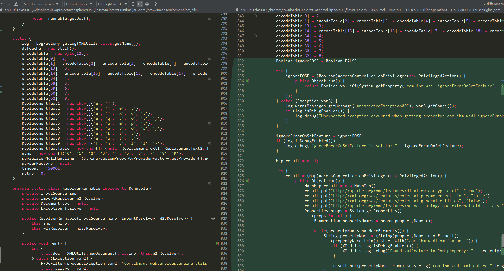
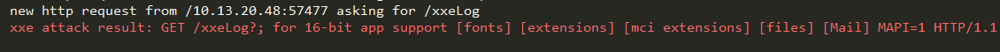

当你觉得很累的时候，说明你正在走上坡路。
2020年9月17日，IBM发布了一个WebSphere XXE漏洞公告。 当时看到这个消息心想我们挖的那个XXE很可能与这个重了。然后看了下补丁，果不其然，当时心里就很遗憾，本来是打算一起找到一个RCE漏洞在一起提交XXE漏洞的，因为害怕提交了XXE官方把反序列化入口也封了，例如CVE-2020-4450，直接封掉了反序列化入口。奈何WebSphere找了一两周也没什么发现，后来正打算把XXE提交了，就看到官方发布了公告，看了下作者，是绿盟的一位大佬，也是CVE-2020-4450的发现者之一，这些默默挖洞的大佬，只可远观眺望啊。WebSphere的分析似乎挺少，聊聊几篇分析，不像Weblogic那样量产漏洞，单是一个高版本sdk就拦截了很多链或者说连接可用链的点，心想与其烂在手里，还不如分享出来，下面写下我们发现过程，其实重要的不是这个XXE，而是到达XXE这个点的前半部分。
WebSphere XXE漏洞分析(CVE-2020-4643)
作者：Longofo@知道创宇404实验室 & r00t4dm@奇安信A-TEAM
时间：2020年9月21日
2020年9月17日，IBM发布了一个WebSphere XXE漏洞公告。 当时看到这个消息心想我们挖的那个XXE很可能与这个重了。然后看了下补丁，果不其然，当时心里就很遗憾，本来是打算一起找到一个RCE漏洞在一起提交XXE漏洞的，因为害怕提交了XXE官方把反序列化入口也封了，例如CVE-2020-4450，直接封掉了反序列化入口。奈何WebSphere找了一两周也没什么发现，后来正打算把XXE提交了，就看到官方发布了公告，看了下作者，是绿盟的一位大佬，也是CVE-2020-4450的发现者之一，这些默默挖洞的大佬，只可远观眺望啊。WebSphere的分析似乎挺少，聊聊几篇分析，不像Weblogic那样量产漏洞，单是一个高版本sdk就拦截了很多链或者说连接可用链的点，心想与其烂在手里，还不如分享出来，下面写下我们发现过程，其实重要的不是这个XXE，而是到达XXE这个点的前半部分。
补丁
先来看看补丁，只能看出是修复了一个XXE，不知道是哪儿的XXE：

可以看出这里是修复了一个XXE漏洞，但是这只是一个Utils，我们找到的那个XXE刚好也用了这个Utils。
漏洞分析
最开始研究WebSphere就是前不久的CVE-2020-4450，这个漏洞外面已经有分析了。为了更熟悉一点WebSphere，我们也去研究了历史补丁，例如印象比较深的就是前不久的CVE-2020-4276，这个漏洞算是历史漏洞CVE-2015-7450的认证方式绕过，RCE的过程与CVE-2015-7450没区别。后面意外的找到另一个反序列化入口，在确认了已经无法在历史漏洞上做文章的时，只好从readObject、readExternal、toString、compare等函数去尝试找下了，后来在一个readObject找到一个能JNDI注入的地方，但是由于sdk高版本的原因，能利用的方式就只能是本地factory或利用jndi本地反序列化了，但是WebSphere公开的利用链都被堵上了，本地反序列化其实没什么作用在这里，所以只剩下看本地Factory了。反序列化入口暂时先不给出，可能这样的反序列化入口还有很多，我们碰巧遇到了其中一个，如果后面有幸找到了RCE漏洞，就把我们找到的入口写出来，下面从那个readObject中的JNDI开始吧。
在com.ibm.ws.ejb.portable.EJBMetaDataImpl#readObject中：
1 | private void readObject(ObjectInputStream in) throws IOException, ClassNotFoundException { |
com.ibm.ws.ejb.portable.HomeHandleImpl#getEJBHome如下：
1 | public EJBHome getEJBHome() throws RemoteException { |
如果是sdk低版本，直接就是外部加载factory rce利用了，但是天不随人愿，如果这么容易就不会有CVE-2020-4450那种复杂的利用了。
接下来就只能一个一个看本地的factory了，也不多大概几十个，一个一个看吧。在com.ibm.ws.webservices.engine.client.ServiceFactory#getObjectInstance中，找到了那个XXE：
1 | public Object getObjectInstance(Object refObject, Name name, Context nameCtx, Hashtable environment) throws Exception { |
com.ibm.ws.webservices.engine.client.Service#Service(java.net.URL, javax.xml.namespace.QName)，在构造函数中：
1 | public Service(URL wsdlLocation, QName serviceName) throws ServiceException { |
com.ibm.wsdl.xml.WSDLReaderImpl#readWSDL(java.lang.String, org.w3c.dom.Document)之后，会调用到一个com.ibm.wsdl.xml.WSDLReaderImpl#parseDefinitions：
1 | protected Definition parseDefinitions(String documentBaseURI, Element defEl, Map importedDefs) throws WSDLException { |
com.ibm.wsdl.xml.WSDLReaderImpl#parseImport:
1 | protected Import parseImport(Element importEl, Definition def, Map importedDefs) throws WSDLException { |
xml payload:
1 | xml如下： |

最后
我们只看了浮在表面上的一些地方，人工最多只看了两层调用，也许RCE隐藏在更深的地方或者知识盲点现在没找到呢，还是得有个属于自己的能查找链的工具，工具不会累，人会。